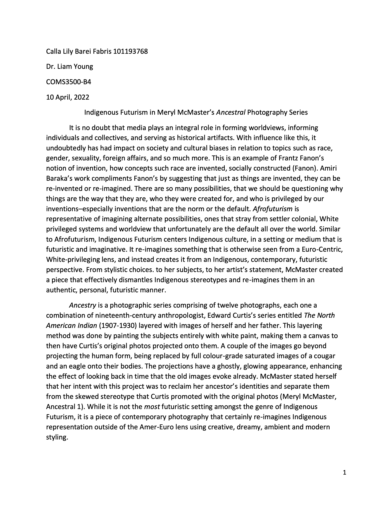

Indigenous Futurism & Visual Representation
An analysis of Indigenous Futurism though Meryl McMaster's Ancestral photography series.

Exploring culture, identity, and representation through research and critical writing.
An analysis of Indigenous Futurism though Meryl McMaster's Ancestral photography series.
